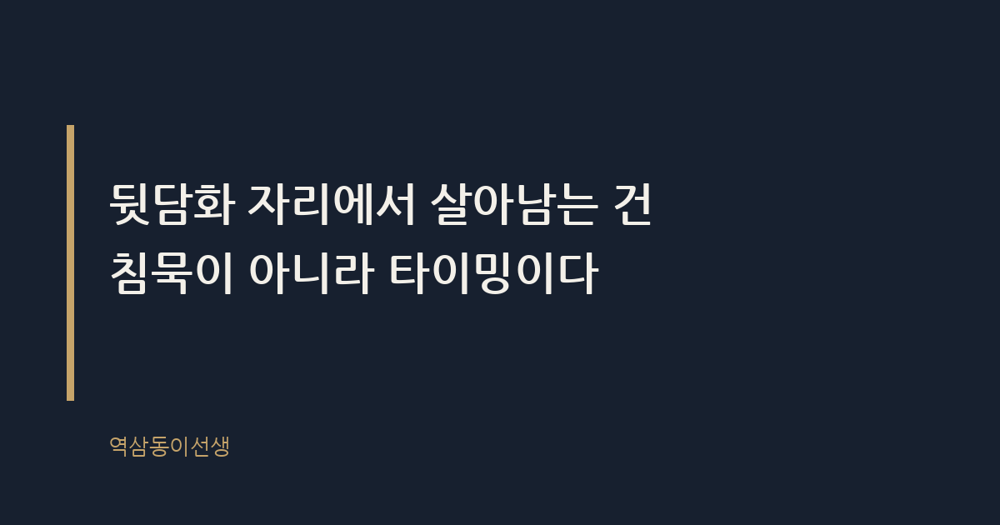
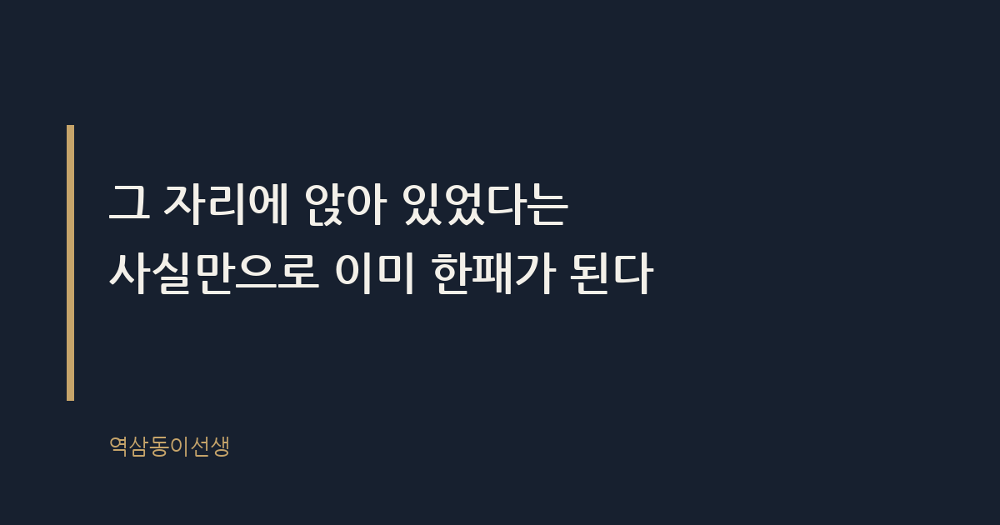

주제 뒷담화 자리에서 빠져나오는 법 (evergreen / office)
제목 후보
- 뒷담화 자리에서 빠져나오는 법, 적 안 만드는 멘트
핵심 키워드 '뒷담화'가 제목 맨 앞에 오고 '빠져나오는 법'이라는 행동형 쿼리와 결합해 검색 의도와 정확히 맞는다 - 회사 뒷담화 자리 피하는 법과 실전 대화 예시
'회사 뒷담화 자리'와 '실전 대화 예시'를 함께 넣어 정보성 검색과 멘트 검색 두 의도를 동시에 잡는다 - 직장 뒷담화 자리에서 조용히 발 빼는 처세술
'조용히 발 빼는'이라는 구체적 동작 표현이 롱테일 검색어와 자연스럽게 겹친다
메타 설명 뒷담화 자리에서 어색하지 않게 빠져나오는 멘트와 실수하기 쉬운 행동을 실제 회사 장면으로 정리했다.
라벨 직장생활, 회사생활, 인간관계, 뒷담화, 사내정치, 처세술, 뒷담화자리빠지는법, 회사뒷담화대처법, 직장인화법, 상사뒷담화대응
실용 자산 예시 문장 모음 — 뒷담화 자리를 피하는 멘트를 바로 써먹고 싶은 도구형 검색 의도라 상황별 대사 예시가 필요하다
발행 전 팩트체크
- 본문에 등장하는 '인사팀 사례'와 '임원 승진 배제 사례'는 특정 수치나 날짜가 없는 일반화된 장면으로 썼으므로 발행 전 과장 표현이 없는지 재확인
이미지 (Blogger 편집기에 드래그해 넣으세요)

도입부 사진 · ⓒ Pexels / Pexels


뒷담화 자리에서 빠져나오는 법, 적 안 만드는 멘트
점심시간, 회사 앞 설렁탕집 테이블에 네 명이 둘러앉았다. 팀장이 화장실 간다고 일어서자마자 옆자리 대리가 수저를 내려놓고 입을 열었다. "아까 회의 때 그거 보셨죠, 진짜..." 나머지 세 명의 눈이 일제히 반짝였다. 나도 모르게 고개를 살짝 끄덕였다. 그 순간 알았다. 말 한마디 안 했는데도 나는 이미 그 자리에 낀 거였다.
뒷담화 자리에서 빠져나오는 건 입을 다무는 기술이 아니다. 타이밍을 잡고 화제를 바꾸는 기술이다. 가만히 앉아서 듣기만 해도 나중에는 "그 자리에 있었잖아"라는 한 문장으로 똑같이 묶인다. 그걸 몰라서 침묵을 선택하는 사람이 의외로 많다.
뒷담화 자리는 왜 그렇게 빨리 번질까
뒷담화란 당사자가 없는 자리에서 그 사람의 행동이나 성격을 부정적으로 평가하는 대화다. 사회학에서는 이걸 집단 결속의 수단으로 설명한다. 같은 사람을 같이 흉보면 짧은 시간 안에 "우리는 한편"이라는 유대감이 생긴다. 회사라는 긴장된 공간에서 이만큼 빠른 친밀감 형성 수단도 드물다.
문제는 이 결속이 공짜가 아니라는 점이다. 뒷담화 자리가 빠르게 번지는 이유는 침묵이 동의로 읽히기 때문이다. 아무 말 안 하고 고개만 끄덕여도, 나중에 그 말이 당사자 귀에 들어가면 "거기 있던 사람들"로 뭉뚱그려진다. 발언 여부는 중요하지 않다. 자리에 앉아 있었다는 사실 자체가 증거가 된다.
게다가 뒷담화는 한 사람으로 끝나지 않는다. 오늘 A 팀장을 같이 흉본 사람들은 내일 B 대리를 도마에 올릴 가능성이 높다. 한 번 형성된 "뒷담화 모임"은 타깃만 바뀐 채 계속 돌아간다. 그 모임에 한 번 앉으면 다음 모임에도 자연스럽게 불려가는 구조다. 처음이 어렵지, 두 번째부터는 아무도 묻지 않고 자리를 비워준다.
가만히 있으면 안전하다는 착각
인사 업무를 거치면서 뒷담화가 사내 메신저 캡처로 돌아다니는 걸 몇 번 봤다. 공통점이 있었다. 처음 말을 꺼낸 사람보다 옆에서 "맞아, 맞아"를 반복한 사람, 그리고 끝까지 조용히 듣기만 한 사람이 오히려 더 오래 원망을 샀다. 말을 꺼낸 사람은 "원래 저런 애"로 소비되는데, 침묵한 사람은 "알면서 같이 있었던 사람"으로 기억된다.
이게 뒷담화 자리가 가진 함정이다. 적극적으로 끼지 않았다는 변명은 당사자에게 통하지 않는다. 자리를 떠나거나 화제를 바꾸지 않은 이상, 그 침묵은 중립이 아니라 방조로 해석된다. 억울해도 그게 조직의 현실이다.
한 번은 팀원 하나가 "저는 그때 한마디도 안 했는데요"라며 억울함을 호소한 적이 있다. 틀린 말은 아니었다. 하지만 당사자 입장에서는 "그 자리에 네 명이 있었는데 아무도 말려주지 않았다"는 사실이 더 아프게 남는다. 말리지 않은 것과 동조한 것 사이의 거리는, 당하는 사람 입장에서는 생각보다 가깝다.
회식 자리에서는 특히 조심해야 한다
술이 한 잔씩 들어가면 뒷담화의 수위가 확 올라간다. 평소 말 아끼던 사람도 소주 두어 잔에 "사실 나도 그렇게 생각했어"를 꺼내는 걸 숱하게 봤다. 문제는 이 발언이 다음 날 출근해서 멀쩡한 기억으로 남는 반면, 듣는 사람은 "그날 밤 그 얘기"를 더 또렷하게 기억한다는 점이다. 술자리라서 괜찮다는 건 말하는 사람만의 착각이다.
회식에서 빠져나오는 가장 쉬운 방법은 건배 타이밍을 이용하는 것이다. 뒷담화가 무르익을 즈음 잔을 들고 "자, 오늘 다들 고생했으니까 한 잔 하죠"라고 끼어들면 대화의 흐름이 자연스럽게 끊긴다. 화제를 바꾸는 멘트가 길 필요는 없다. 짧고 밝게, 그리고 타이밍만 맞으면 충분하다.
단톡방으로 옮겨가면 더 위험해진다
요즘은 뒷담화가 식당 테이블보다 단체 채팅방에서 더 많이 벌어진다. 말은 공중으로 흩어지지만 텍스트는 캡처로 남는다. "읽씹은 했어도 말은 안 했다"는 변명도 통하지 않는다. 읽음 표시 숫자가 줄어드는 순간 이미 참여한 것으로 간주된다.
단톡방 뒷담화가 더 무서운 이유는 전달 속도 때문이다. 식당 대화는 그 자리에 있던 사람만 듣지만, 캡처 한 장은 몇 초 만에 다른 방으로, 심지어 당사자에게까지 전달된다. 이모티콘 하나, 'ㅋㅋㅋ' 세 글자도 그 순간엔 가벼워 보이지만 캡처되면 명백한 동조 증거가 된다. 뒷담화성 대화가 시작되면 말을 얹기보다 조용히 다른 용건으로 말을 거는 편이 안전하다. "그나저나 내일 회의 자료 누가 정리해요" 같은 업무 멘트 하나가 흐름을 끊는 데 의외로 효과적이다.
화상회의 끝나고 이어지는 뒷담화는 더 교묘하다
재택근무가 늘면서 뒷담화의 무대도 바뀌었다. 화상회의가 공식적으로 끝난 뒤, 몇 명이 "잠깐 화면 안 끄고 얘기 좀 할까요" 하며 남는 경우가 있다. 녹화가 꺼졌다는 걸 확인하자마자 분위기가 바뀐다. 이때가 가장 빠져나오기 애매한 순간이다. 회의실처럼 물리적으로 자리를 뜨기도 어렵고, 화면을 끄면 그 자체로 티가 나기 때문이다.
이럴 땐 "저 다음 미팅이 있어서 먼저 나가볼게요"라는 멘트가 가장 자연스럽다. 실제 일정이 없어도 상관없다. 중요한 건 그 순간 화면에서 사라질 명분이다. 화상회의는 오프라인 자리보다 오히려 빠져나오기가 쉽다. 핑계를 댈 수 있는 장치가 이미 화면 안에 있기 때문이다.
자리를 못 피할 때 쓰는 멘트
완전히 자리를 뜨는 게 매번 가능하진 않다. 식사 중이거나, 택시를 같이 탄 상황이거나, 내가 막내라 먼저 일어나기 애매한 날도 있다. 그럴 땐 화제를 돌리는 쪽이 현실적이다. 아래는 실제로 효과가 있었던 멘트와, 오히려 더 깊이 끌려 들어간 반응을 나란히 정리한 것이다.
| 상황 |
이렇게 말한다 |
이건 피한다 |
| 동료가 상사 뒷담화를 막 시작할 때 |
"아 맞다, 나 그거 물어볼 거 있었는데. 그 프로젝트 자료 어디 있어?" |
"맞아, 맞아. 나도 그렇게 느꼈어" |
| 대화에 이미 낀 상태에서 빠지고 싶을 때 |
"나 커피 리필하러 갈 건데, 같이 갈 사람?" |
자리에 앉은 채 핸드폰만 보며 버티기 |
| 당사자가 갑자기 돌아왔을 때 |
자연스럽게 업무 이야기로 말을 이어받기 |
갑자기 조용해지거나 어색하게 웃기 |
| "너도 그렇게 생각하지?"라고 직접 물을 때 |
"글쎄, 난 그 상황을 잘 몰라서. 그쪽 입장도 있을 것 같은데" |
"어, 그렇지"하고 바로 동조하기 |
이 멘트들의 공통점은 상대를 지적하지 않는다는 데 있다. "그런 얘기 그만해"가 아니라 "나 딴 게 궁금한데"로 넘어가는 방식이다. 상대도 체면을 구기지 않고, 나도 불편한 사람이 되지 않는다. 화제 전환 멘트는 미리 두세 개 정해두면 실전에서 더 자연스럽게 나온다. 당황한 순간에 즉흥적으로 짜내려 하면 오히려 더 어색해진다.
뒷담화 주도자보다 더 오래 기억되는 사람
승진 심사 자리에 몇 번 앉아본 경험으로 말하자면, 뒷담화 자체로 사람을 평가하는 경우는 드물다. 대신 "저 사람은 어느 자리에서든 말을 옮기지 않는다"는 평판이 쌓인 사람은 확실히 다르게 보인다. 반대로 뒷담화 자리마다 빠지지 않고 끼었던 사람은, 특별히 큰 사고를 안 쳤어도 "입이 가볍다"는 꼬리표가 조용히 따라붙는다. 그 꼬리표는 본인만 모른다.
뒷담화를 먼저 꺼낸 사람은 의외로 금방 잊힌다. 그 자리에서 맞장구치며 분위기를 키운 사람, 그리고 나중에 말을 옮긴 사람이 더 오래 기억에 남는다. 조직은 누가 불을 질렀는지보다 누가 불을 더 키웠는지를 더 선명하게 기억한다.
기억에 남는 장면이 하나 있다. 팀 개편 시즌에 한 직원이 특정 팀장 밑으로 가고 싶다며 면담을 요청했다. 이유를 물으니 "그 팀장님은 다른 사람 얘기를 전혀 안 하신다"는 대답만 돌아왔다. 일을 잘해서가 아니라 입이 무거워서 함께 일하고 싶다는 평가였다. 능력 못지않게 이런 평판이 사람을 이동시킨다.
직급에 따라 빠지는 방식도 달라진다
신입일 때는 뒷담화 자리에서 도망치기가 더 어렵다. 선배들이 말을 꺼내면 자리를 뜨는 것조차 눈치가 보인다. 이럴 땐 적극적으로 반박하기보다, 모르는 척 화제를 다른 데로 돌리는 수동적 방식이 더 안전하다. "저는 아직 그 업무를 잘 몰라서요"처럼 발을 살짝 빼는 멘트가 효과적이다.
연차가 쌓이고 팀장급이 되면 상황이 달라진다. 이때는 침묵만으로도 메시지가 전달된다. 후배들이 누군가를 흉보기 시작할 때 팀장이 아무 반응 없이 화제를 업무로 돌리면, 그 자체가 "이 자리에서 그런 얘기는 안 된다"는 신호로 작동한다. 직급이 올라갈수록 말보다 침묵이 더 큰 권위를 갖는다는 걸 여러 번 확인했다.
그렇다고 정색하고 바른말 하면 더 피곤해진다
여기서 많이들 저지르는 실수가 있다. 뒷담화가 불편하다고 "그런 얘기 하지 말자"며 정색하는 경우다. 이러면 그 순간 분위기는 얼어붙고, 다음부터는 아예 그 모임에서 배제된다. 조직 안에서 정보가 끊기는 건 생각보다 치명적이다. 뒷담화 자리를 피하라는 말이 사람들과의 자리를 아예 끊으라는 뜻은 아니다. 정색하지 않으면서 빠지는 균형이 필요하다.
화제 전환이 효과적인 이유가 여기 있다. 상대를 가르치려 들지 않으면서도, 대화의 방향을 자연스럽게 바꿀 수 있다. 업무 이야기, 다음 일정, 밥 메뉴 같은 사소한 주제도 괜찮다. 중요한 건 그 자리의 온도를 급격히 낮추지 않으면서 발을 빼는 것이다.
결국 남는 건 말보다 태도
씁쓸하면서도 꽤 명확한 결론이다. 뒷담화 자리에서 무슨 말을 했는지보다, 그 자리에서 어떤 태도를 보였는지가 더 오래 남는다. 말 한마디 안 했어도 분위기에 휩쓸렸다면 소용없고, 적당히 웃으며 화제를 돌렸다면 그걸로 충분하다. 뒷담화 자리에서 빠져나오는 건 결벽이 아니라 요령이다. 그 요령을 가진 사람이 결국 오래 신뢰받는 걸 여러 번 지켜봤다.
Q. 뒷담화 자리에서 화제 돌리려다 오히려 더 어색해진 적, 저만 있는 건 아니죠?